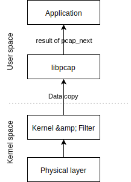
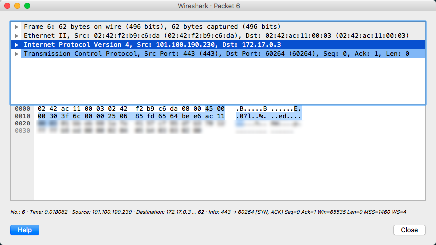
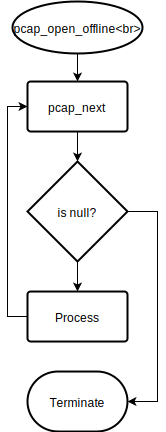
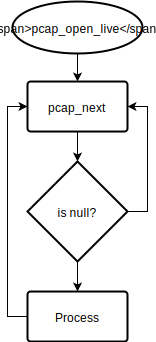
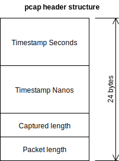

Background
libcap (also: pcap) is a network traffic packet capture library that enables real-time and offline packet capture and analysis. Packet capture and analysis has many use cases.
Scala Native is an ahead-of-time compiler for Scala targeting LLVM and so capable of producing native binaries. This brings the promise of high performance coding using existing Scala skills and high quality tooling such as SBT (Scala Build Tool) and ScalaTest as well as availability of patterns like type classes.
Scala, which runs on the JVM, can interact with native libraries in two ways: JNA (Java Native Access) and JNI (Java Native Interface). JNA slower but easier than JNI. For JNA you need nothing more than a dependency but for JNI you need to write native code. When doing in Scala, you can benefit from the sbt-jni plugin that automates this compilation. Scala Native's interop is similar to JNA.
Pcap4j is an actively maintained library that wraps libpcap using JNA. Then there is jNetPcap which as a project appears inactive and uses JNI and ByteBuffer. And a last way would be to use JNI with Unsafe for the highest performance. The performance is difference is huge. There may be other even higher performance ways, but this is beyond the scope - if you have ideas do let me know on Twitter.
Packets can be captured in live mode using tcpdump, replayed with tcpreplay and visually analysed with Wireshark. libpcap supports live capture and reading from files.

In live capture mode, the Kernel will look for the next packet at the pcap_next call, pass through any defined filters, and then copy the data into user-space.
There are solutions for pure zero-copy approach but it's beyond the scope of this article.
Why this interests me
- A client needed a high performance online packet analyser for the binary-encoded GPRS Tunnelling Protocol (GTP) which runs over UDP (see the GTPv2 specification — large PDF!) and contains cell tower identifiers for 4G mobile subscribers. I implemented one solution with Scala & libpcap.
- I worked on Scala projects of mine needed a native (JNA) interface layer to ENet, "Reliable UDP networking library" and lots of binary parsing.
- I was researching ways of achieving high performance data processing, including not only JVM Unsafe but also memory mapping and ring buffers.
- I'm a big Scala fan, having worked on it professionally and non-commercially since 2013.
Developing a program
For showcasing what's possible - we're going to go through developing a simple libpcap program using Scala Native.
Goal of the program would be to output packet information from files and also from a live interface. Minimal packet information would be: Timestamp, source IP, destination IP, packet length, a few bytes of the packet in hexadecimal.
Note that functional and pure programming are not in scope of this article.
Resources
- Scala Native The documentation (PDF)
- libpcap manpages, linux.die.net and tcpdump.org
- libpcap sources
Preparing some reference data
Which is basically a pcap file. Using tcpdump:
$ tcpdump -i [interface] -w sample.pcapCapture some packets, maybe do a speed test, then terminate the app and now you have a pcap file which you can consume later.
Use capinfos to get basic information about your pcap file. You can also look at it visually with Wireshark.

Tools
I use SBT to continuously run the program using Triggered Execution.
I use Docker and ScalaWilliam/scala-native-sbt Docker image to get an isolated Linux execution environment:
$ docker run -v $PWD:/workspace -w /workspace -it scalawilliam/scala-native-sbt
root@0c957f870d61:/workspace# apt-get -y install libpcap-devAnd of course IntelliJ IDEA for its excellent Scala support.
Minimal required application flow
Packet-reading flows


We shall combine two flows into one app: Live and Offline (File).
Processing the packet
tshark can give you this output already, but we're not interested in replacing tshark.
- Read timestamp
- Read packet length
- Determine whether packet is IPv4
- Read source IP
- Read destination IP
- Read some bytes of data
- ... and at every step of the way, bound-check
Minimal native mapping

In order to call native methods we need some sort of interface definition. It's similar to defining a C header file which then is then #import'ed.
This was not particularly difficult achieve with the resources. Will be obvious to anyone who's done some C.
@native.link("pcap")
@native.extern
object pcap {
/** This is just a pointer for us, we don't care what is inside **/
type pcap_handle = native.Ptr[Unit]
type pcap_pkthdr = native.CStruct4[native.CUnsignedLong,
native.CUnsignedLong,
native.CUnsignedInt,
native.CUnsignedInt]
def pcap_open_live(deviceName: CString,
snapLen: CInt,
promisc: CInt,
to_ms: CInt,
errbuf: CString): pcap_handle =
native.extern
def pcap_open_offline(fname: CString, errbuf: CString): pcap_handle =
native.extern
def pcap_next(p: native.Ptr[Unit],
h: native.Ptr[pcap_pkthdr]): native.CString = native.extern
def pcap_close(p: native.Ptr[Unit]): Unit = native.extern
}Minimal code for opening a pcap handle
Here we'll capture from any interface by default.
val pcapHandle = if (live) {
pcap.pcap_open_live(
deviceName = c"any",
snapLen = Short.MaxValue,
promisc = 0,
to_ms = 10,
errbuf = errorBuffer
)
} else {
pcap.pcap_open_offline(fname = toCString(args.last),
errbuf = errorBuffer)
}Minimal code for continuously reading the handle
At this point, I was getting closer to pointers and the like and if I did something wrong, I'd get a segfault with exit code 139. Still dislike Java exceptions and verbose stack traces?
val packetHeaderPointer: native.Ptr[pcap.pcap_pkthdr] =
native.stackalloc[pcap.pcap_pkthdr]
var packetReadData = pcap.pcap_next(pcapHandle, packetHeaderPointer)
var continue = true
while (continue) {
if (packetReadData != null) {
process_packet(
epochSecond = (!packetHeaderPointer._1).toLong,
dataLength = (!packetHeaderPointer._3).toInt,
data = packetReadData,
cooked = cooked
)
} else if (!live) {
continue = false
}
if (continue) {
packetReadData = pcap.pcap_next(pcapHandle, packetHeaderPointer)
}
}Processing an individual packet
So at this point we have extracted the key information and pass a C-style string (pointer) to the method.
Note that this C-string is NOT a null-terminated string because packets may contain the byte 0x00 anywhere. So you have to rely on input length to manipulate the incoming data.
/**
* We have a separate processing function to separate out the plumbing.
*
* @param data remember this is a pointer! But note that it may contain byte 0x00
* which is typically a string termination character - so we must pass dataLength explicitly.
*/
def process_packet(epochSecond: Long,
dataLength: Int,
data: CString,
cooked: Boolean): Unit = {Linux Cooked Capture
IF we're capturing on Linux, consider Linux cooked-mode capture (SLL) which can be confusing.
When we're in Cooked mode, there are 2 extra bytes at the front of the packet.
val offsetBytes = if (cooked) 2 else 0Check bounds and verify it's IPv4
Dealing with IPv6 and and others is a different matter. Here we start incrementing pointers, in a pure manner, mind you.
val hasEnoughData = dataLength > (offsetBytes + PcapDestinationIpv4AddressOffset + 4)
if (!hasEnoughData) return
/** IP version is stored in the first nibble of the target byte **/
val isIpv4 = (!(data + IpVersionByteOffset + offsetBytes) >> 4) == 4
if (!isIpv4) returnRead source and destination IPs
val ip = !(data + PcapSourceIpv4AddressOffset + offsetBytes)
.cast[Ptr[CUnsignedInt]]Make an IP human readable
This was one thing that was easier in native land than in JVM land. As far as I'm aware there is no inet_ntoa in the JVM to convert an IP address from Int into text form. This was easily achievable by native binding.
/**
* We use this to avoid our own byte manipulation.
* Ironically I have to do this with bytes in Java, so scala-native is already proving itself!
*/
@native.extern
object inet {
def inet_ntoa(input: CUnsignedInt): native.CString = native.extern
}The usage is super simple:
val sourceIp = {
val ip = !(data + PcapSourceIpv4AddressOffset + offsetBytes)
.cast[Ptr[CUnsignedInt]]
fromCString(inet.inet_ntoa(ip))
}Printing the packet summary
One line, one packet - with some data bytes in hex.
print(s"Time: $epochSecond, $sourceIp --> $destIp, $dataLength bytes: [")
(0 to Math.min(dataLength, 12))
.map { n =>
!(data + offsetBytes + n)
}
.foreach { v =>
native.stdio.printf(c"%02X", v)
}
println("...]")Running for yourself
...so you can reproduce this yourself.
Let's assume you've already started the Docker container as earlier in the article, and produced a sample pcap file.
After cloning the ScalaWilliam/scala-native-libpcap repository,
do:
root@0c957f870d61:/workspace/scala-native-libpcap# sbt clean 'show nativeLink'
...
[info] /workspace/scala-native-libpcap/target/scala-2.11/scala-native-libpcap-out
[success] Total time: 37 s, completed Mar 26, 2017 3:49:38 AM
root@0c957f870d61:/workspace/scala-native-libpcap# /workspace/scala-native-libpcap/target/scala-2.11/scala-native-libpcap-out /workspace/sample.pcap |head
Time: 1490492402, 192.168.1.53 --> 74.125.68.149, 790 bytes: [1C872...] <-- Google
Time: 1490492402, 74.125.68.149 --> 192.168.1.53, 579 bytes: [38C9E...] <-- Google
Time: 1490492403, 192.168.1.53 --> 104.16.59.5, 54 bytes: [1C872...] <-- CloudFare
Time: 1490492403, 104.16.59.5 --> 192.168.1.53, 64 bytes: [38C98...] <-- CloudFare
...Running live
Exercise for the reader... just read the source :-)
Impact
scala-native opens up a plethora of integration opportunities: you are no longer restricted to using JVM-only libraries or waiting for those wrappers, no longer restricted to using C++/C for lower level or high performance programming. You can now rapidly iterate and test your code in JVM mode and port it to native easily.
This opens up the possibility of native interoperation with Python and Lua - and from JVM via Luaj, jep and Jython. Good article: Integrating Python into Scala Stack.
You can write your application in the JVM first knowing you can potentially scale it out later, should the JVM be the pain point. Though in my experience it really isn't, but still worth having that possibility.
Of course there will be many other use cases, and I'd like to mention them here as well - so why not Tweet me about them?
Make sure to watch Denys Shabalin's Scala Days talk "Scala Goes Native" (slides).
Conclusion
We managed to read offline and online packets using a native packet capture library and Scala.
There were no major difficulties while doing so, proving scala-native is a viable platform for native applications for an existing JVM development team who should strongly consider Scala.
I also came across some interesting (PDF) reading about packet capture. And learned that ifconfig is missing from latest Debian!
Big thanks for free graphing software draw.io.
© William Vykintas Narmontas.